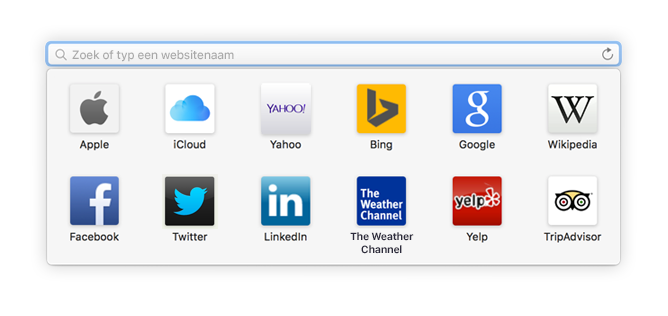
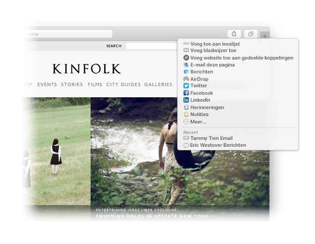

Een favoriete website vinden.
Klik op het slimme zoekveld om naar uw favoriete websites te gaan. Klik op een website om die te bezoeken.

Een site vastpinnen.
Sleep een tab naar links om een site vast te pinnen. De tab blijft dan in de tabbalk staan.

Een koppeling delen.
Klik op  om een koppeling te versturen in een e-mail of tekstbericht, om de koppeling te delen via Facebook of Twitter of om deze aan Notities toe te voegen.
om een koppeling te versturen in een e-mail of tekstbericht, om de koppeling te delen via Facebook of Twitter of om deze aan Notities toe te voegen.